Created 17 April 1999, to send to Wendy. These were picked from all the Wallace family photos I've got in digital form so far.
Suggestion: Wait a minute or so after opening this file, to allow the many photos below to load into memory. This will result in smoother scrolling. Also - the easiest way to scroll thru these is to use the page-up and page-down keys, and the up/down arrow keys. Holding down the arrow keys seems to work best.
Mom (Helen Wallace, originally McMasters) as a little girl in Canton.
Image Name: MCMSTR1.jpg
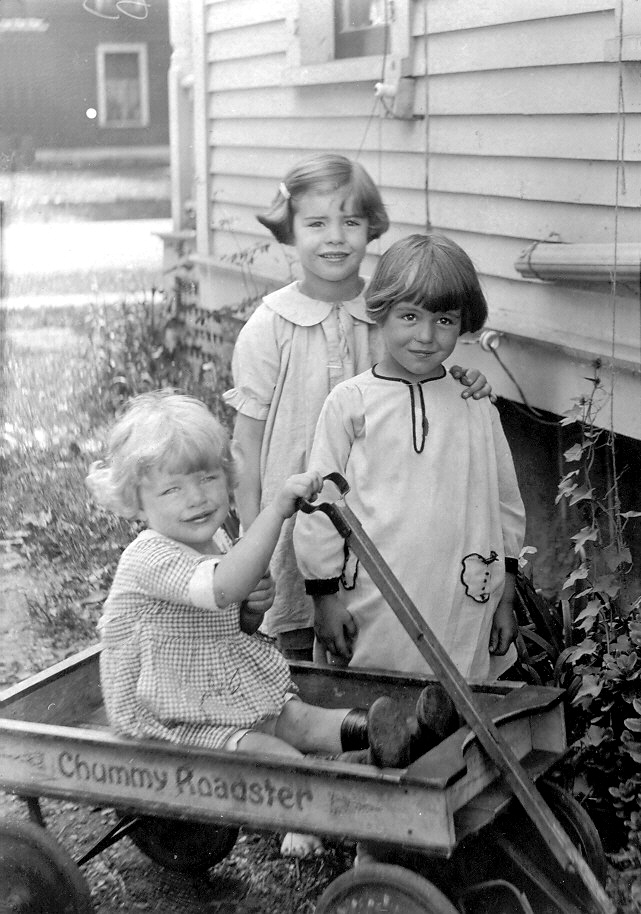
Wallace Family group taken around 1969 in back yard of Sun Valley house.
Ken staged the old-fashioned theme, Norm held the cable release. The horse's name was Seargent. Bim had recently broken his leg - he fell off the neighbor's roof (the Covich's) while watering it down during a brush fire. Irony: Rudy Covich was a fireman…
Image Name: sunvly1.jpg
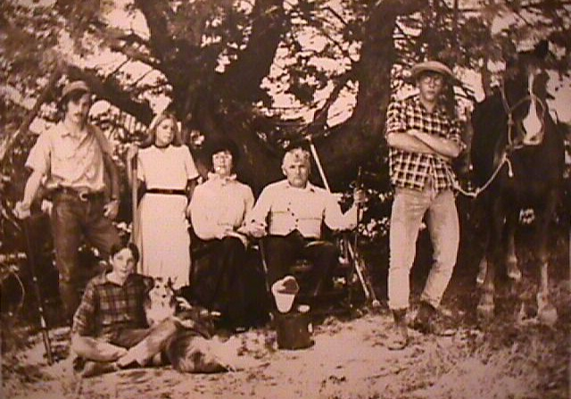
Detail of photo above. Charlie, age 17 or so.
Image Name: cwsrgnt.jpg
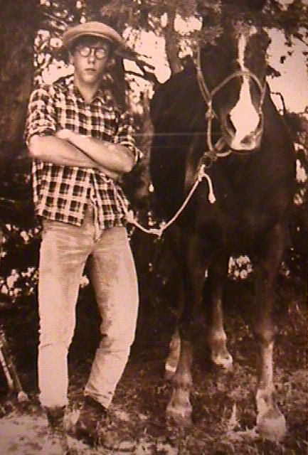
Bim rowing out to his sailboat, early 80's
Image Name: BMBOAT1.jpg
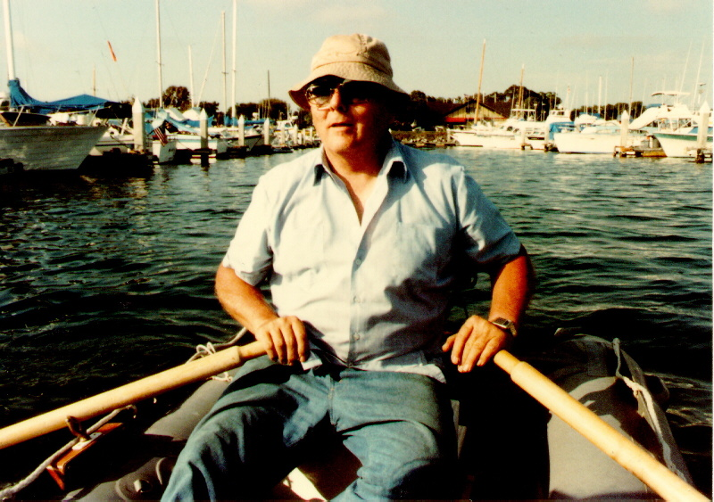
David at Torrey Pines Extension, with Torrey Pines Headland in the background. Taken in June 1983, so David was about 7 months old.
Image Name: DAVID3.jpg
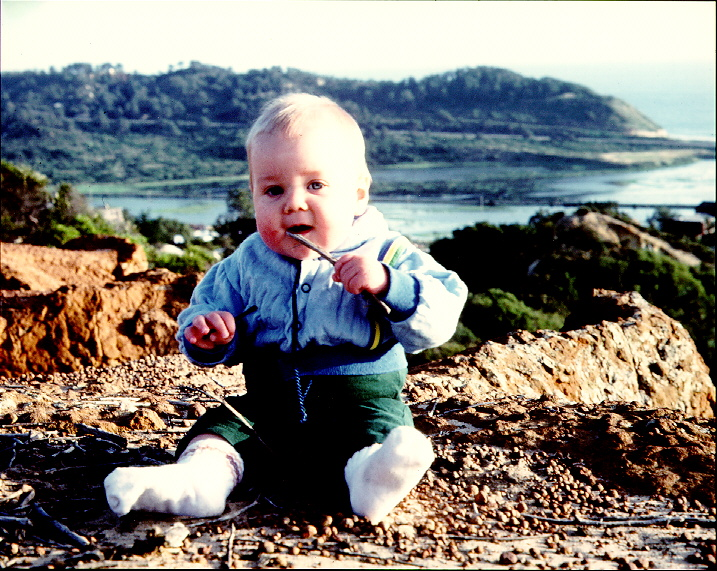
David and Patty, 1984
Image Name: PTDW2.jpg
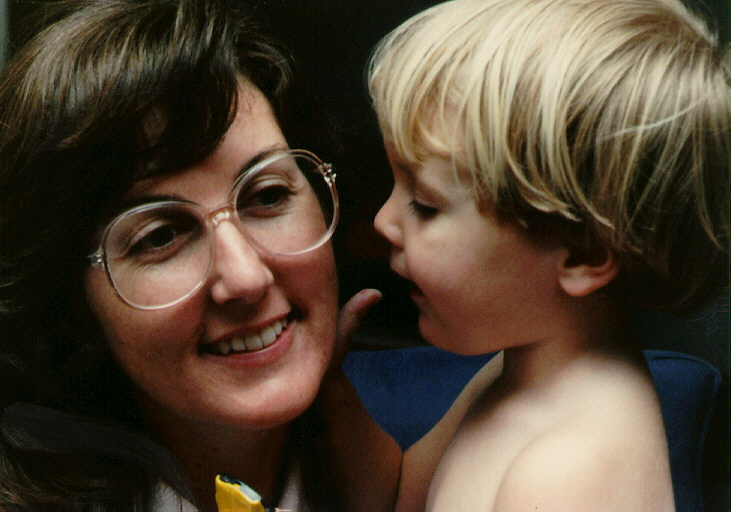
David at age 3 in late 1985. Photo was taken on the "Deep dark dank" trail, in what is now the San Elijo bird reserve in Solana Beach.
Image Name: DPDRK1.jpg
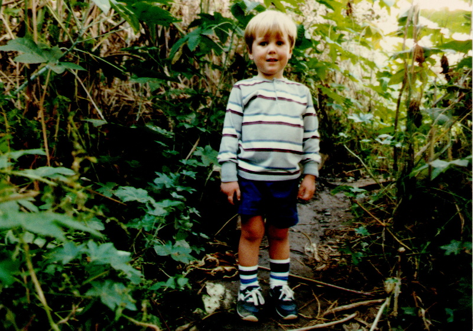
Elizabeth Borders
Image Name: LIZBTH1.jpg
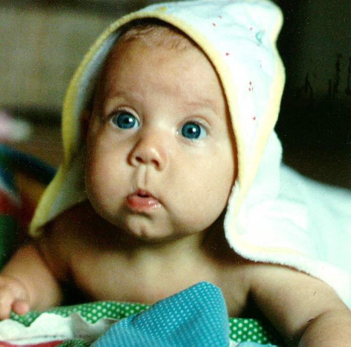
Katie at San Dieguito Park in summer of 1988, age a bit over 2.
Image Name: KTTREE5.jpg
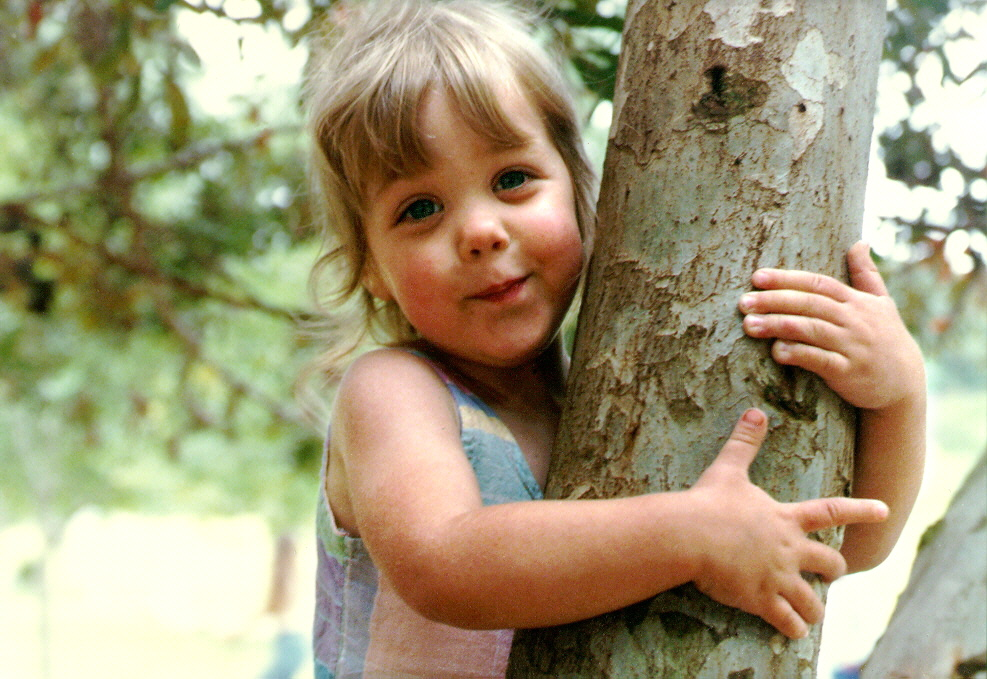
Katie Wallace, standing in the front door of our San Marcos house. It was her third birthday, Feb 1989.
Image Name: KTDOOR1.jpg
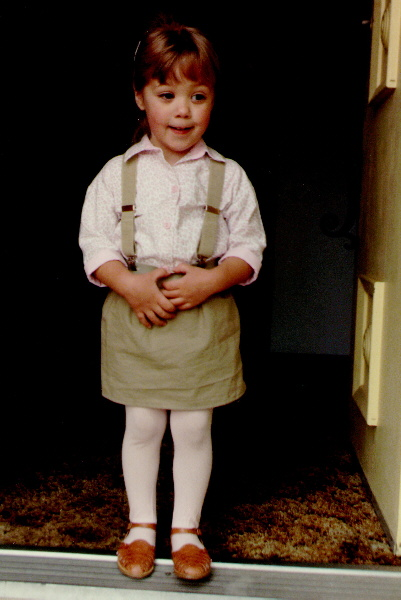
Goofing around…
Image Name: KTDSTORT.jpg
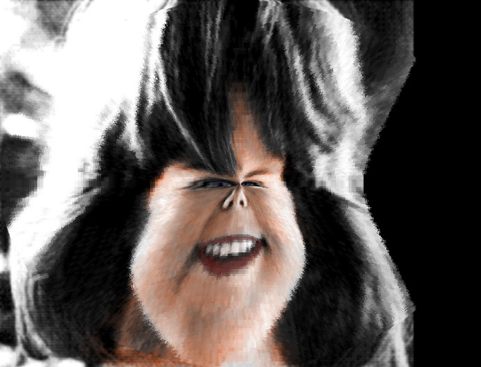
The Borders family visited our San Marcos home in 1997? Left to right: Suzanne Borders, Katie Wallace, Carrie Borders, and Elizabeth Borders.
Image Name: ktbrdrs1.jpg
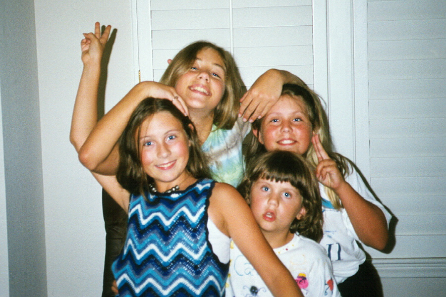
Christmas 1997? At Pete and Francie Filanc's house. Charlie is in back, and in the front row is Francie, Karen Chin, Steve and then Jane Dempsey, and finally Pete.
Image Name: petefrant.jpg
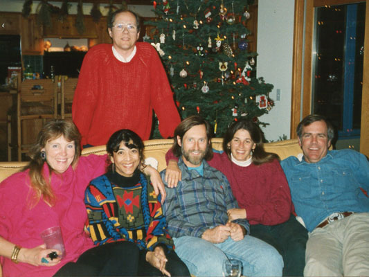
A burned waffle (Dad messed up). May 1998.
Image Name: waffle2.jpg
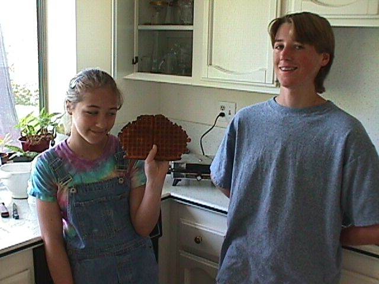
Katie's invention (with Dad's help): The "Cereal Saver". It dispenses milk at the last minute as cereal is being spooned into your mouth! Avoids soggy cereal and wasted milk. 6th grade, 1998.
Image Name: Spoon.jpg
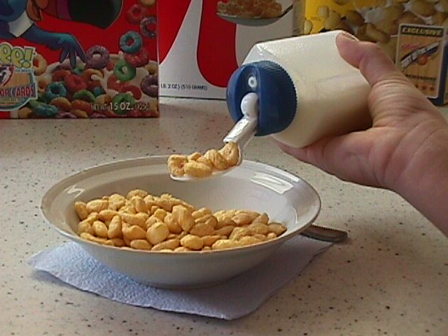
Katie's "Cereal Saver" detail, part 1: bottle is gently squeezed, milk starts to flow into spoon.
Image Name: Spoon1.jpg
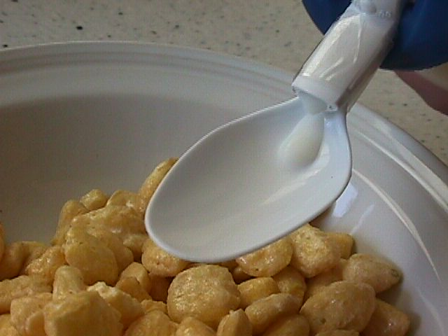
Katie's "Cereal Saver" detail, part 2. Milk is now in spoon. But oops, normally cereal would be in spoon before milk is dispensed…
Image Name: Spoon2.jpg
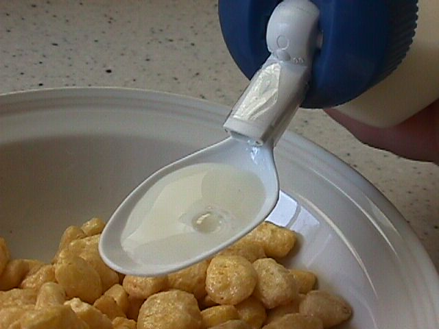
Charlie and Patty went to Brussels, Belgium in March 1998, for a medical equipment conference and show. Here's Charlie posing with a life-support machine (a ventilator) just being released at the show. Charlie helped to design the software for the machine.
Image Name: 840clw1z.jpg
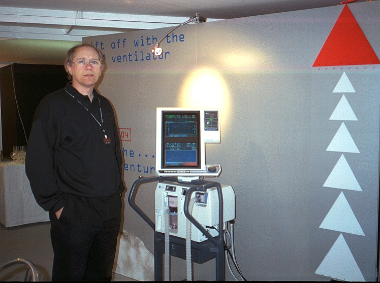
Brussels, March 1998 - Patty and Charlie in front of the Botanical Building.
Image Name: charpt2z.jpg
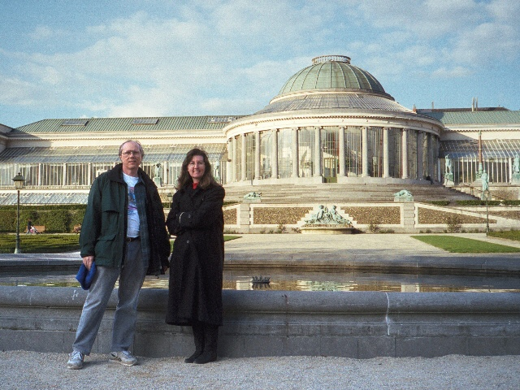
Thanksgiving 1998 at Ken and Cathleen's house. Left to right: Ken, Cameron, Cathleen, Brandon (covering face), Bim, Delores (Cathleen's Mom), Patty, Chas (Cathleen's brother), Chas's wife's son, David, Chas's wife, Charlie.
Image Name: wgrpa3s.jpg
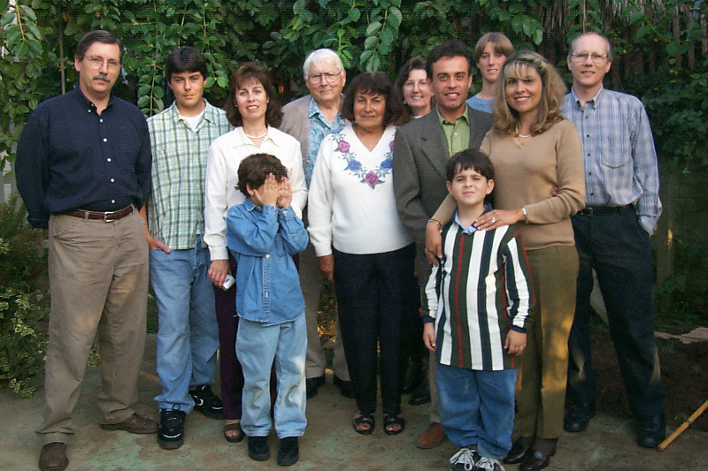
Charlie went to Atlanta in early 1999 for a conference. This is a restaurant there - real Southern flavor.
Image Name: pittypat.jpg
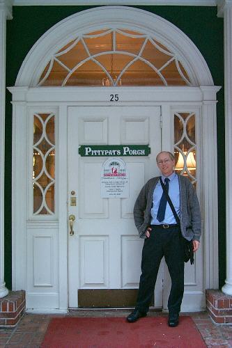
Family vacation, summer of 1998: Cambria, Hearst Castle, Carmel, Point Lobos, Monterey, Santa Cruz. On the way north we stopped in Solvang for some pastries…
Image Name: solvng1q.jpg
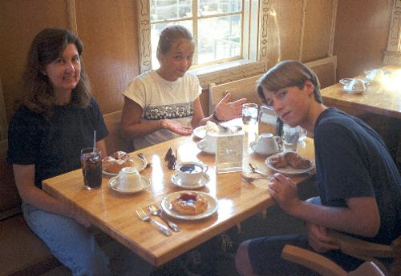
Family vacation, summer of 1998: Patty at Moonstone Beach in Cambria.
Image Name: pmnstn1q.jpg
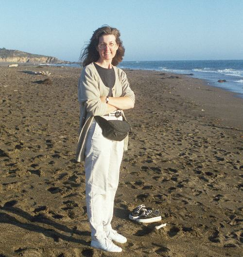
Family vacation, summer of 1998: David at Moonstone Beach in Cambria.
Image Name: dmnstn1q.jpg
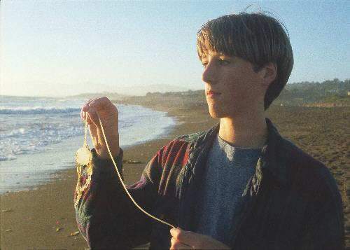
Family vacation, summer of 1998: Campsite was inland a bit from Carmel. We used this camp as our base while making trips to Point Lobos, Carmel, Monterey (aquarium), and Santa Cruz (the Boardwalk).
Image Name: tents1q.jpg
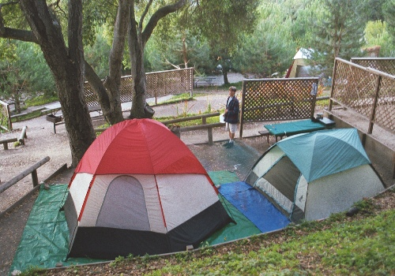
Family vacation, summer of 1998: Pelicans! Taken at Point Lobos.
Image Name: pelcns1q.jpg
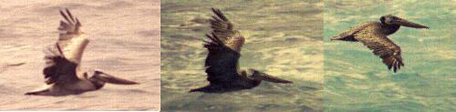
Family vacation, summer of 1998: Foggy scenery at Point Lobos.
Image Name: lobofg3q.jpg
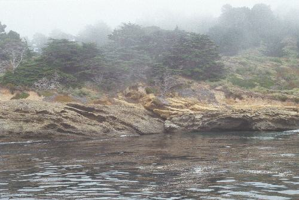
Family vacation, summer of 1998: Patty outside her old dorm building at UC Santa Cruz.
Image Name: ptucsc1q.jpg
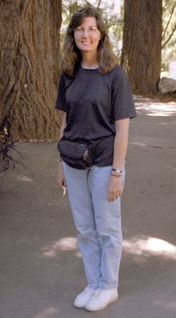
Family vacation, summer of 1998: Lunch after visiting the Monterey Bay Aquarium (visible thru window). A few minutes before this picture was taken, David accidentally doused Katie with freezing cold soft drink. Thus, Katie's expression…
Image Name: ksplsh1q.jpg
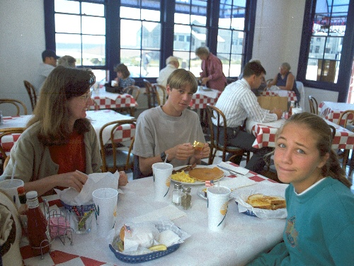
Family vacation, summer of 1998: Katie and David along the "17-mile Drive" in Pacific Grove.
Image Name: dk17mi1q.jpg
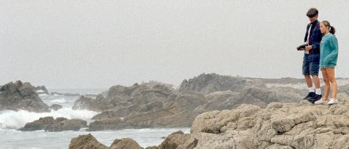
Family vacation, summer of 1998: Family in convertible on the "17-mile Drive" in Pacific Grove. So, you ask, why the convertible?? Our Camry broke down, so we had to rent a car - oh darn! Do we look like we're suffering?
Image Name: cnvrtb1q.jpg
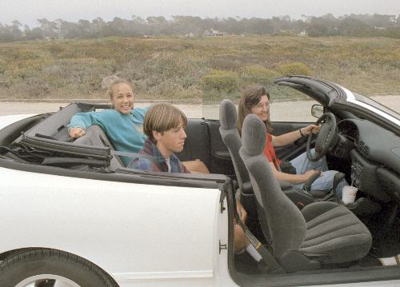
Bim Wallace at home, 9/98
Image Name: P0000084s.jpg
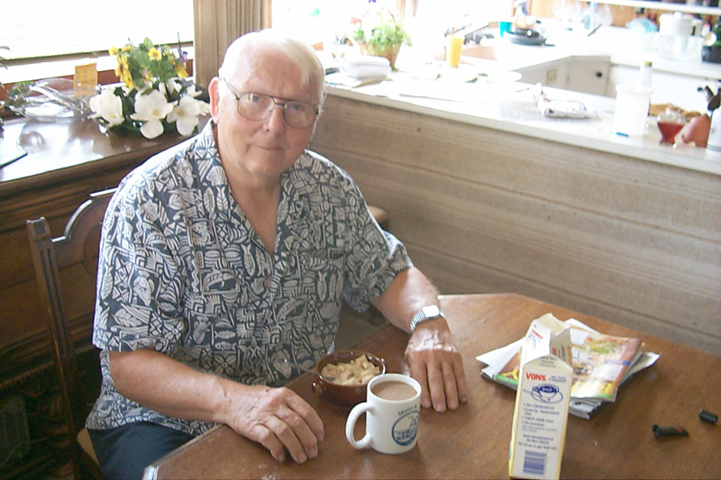
Helen Wallace with cat Gato, September 1998. Gato had just reappeared after being missing for several days, so Helen was overjoyed.
Image Name: momgatot.jpg
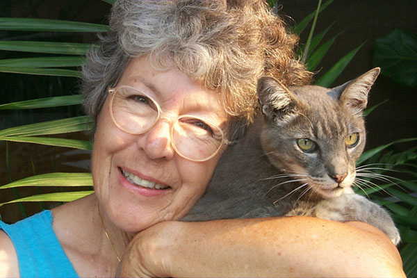
Patty with our parakeet "Charger" in 1998. This was taken in the kitchen of our new Encinitas home.
Image Name: pt&brd1u.jpg
Steve and Jane Dempsey's annual Christmas party, 1998. Left to right, front row: Mary Jo Redman, Katie Wallace, David Wallace, Charlie Wallace. Back row: Jean Donelson, Steve, Jane, Patty Wallace, Stu Donelson, and Karen Chin.
Image Name: hwdyxm5h.jpg
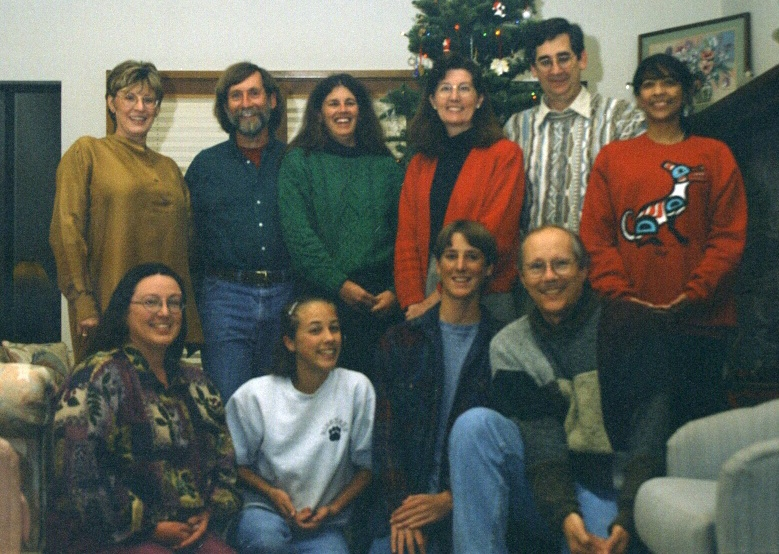
Pete Filanc with his Indian motorcycle, similar to one ridden across the US by Bim Wallace after WW2. Photo taken at Pete and Francie's Christmas party, 1998.
Image Name: petecy1s.jpg
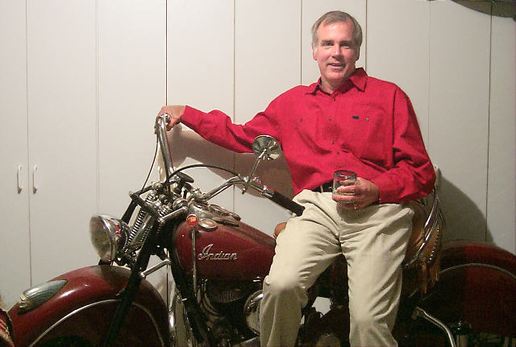
Pete and Francie's Christmas party, 1998. Left to right: Francie and Pete Filan, Patty and Charlie Wallace, and Steve and Jane Dempsey.
Image Name: hwdy1s.jpg
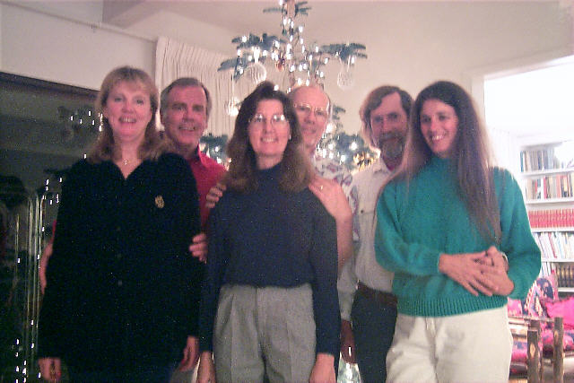
Photo used on Patty and Charlie's 1998 Christmas cards. Katie and David were wrapped up in Cristmas lights for the photo, and then the galaxies were added in (this background is from the Hubble Space Telescope, the "Deep Field 1")
Image Name: ktdwxm4t.jpg
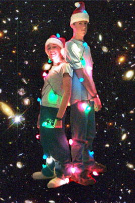
Our dog, "Snickers"
Image Name: p000141s.jpg
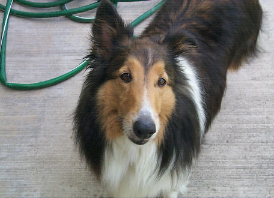
Typical scene looking down from the top of the stairs in our Encinitas home. Taken on 9/26/98, Charlie's 46th birthday. David is playing piano, Katie making a face.
Image Name: P0000229.jpg
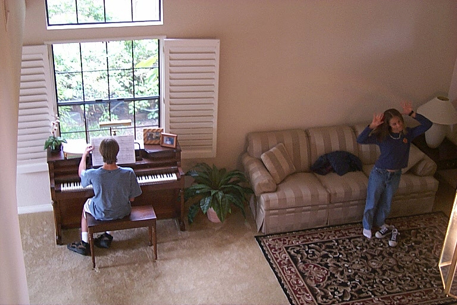
Visit to the Quirk's home in Irvine, September 1999. These are Phil and Carole's kids, Brian (4) on left, Gavin (7) on right.
Image Name: P0000250t.jpg
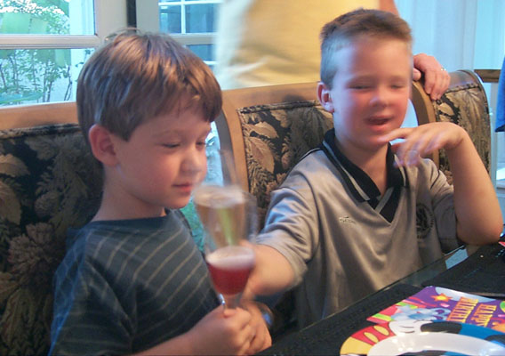
Visit to the Quirk's home in Irvine, September 1999. Phil pours the Martinelli's…
Image Name: P0000245t.jpg
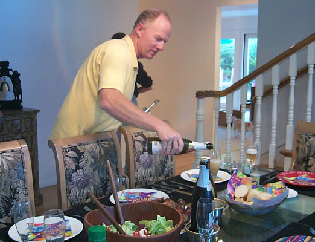
Visit to the Quirk's home in Irvine, September 1999. Carole with
their dog "Nevada".
Image Name: P0000240t.jpg
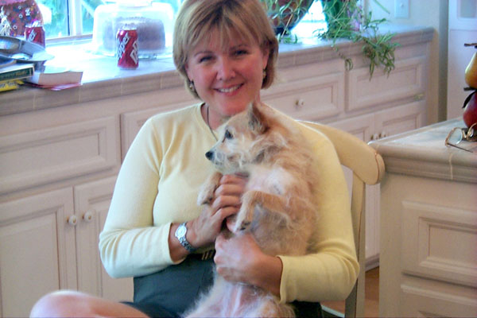
Visit to the Quirk's home in Irvine, September 1999. Matt Quirk (age 14), David Wallace (15).
Image Name: P0000234t.jpg
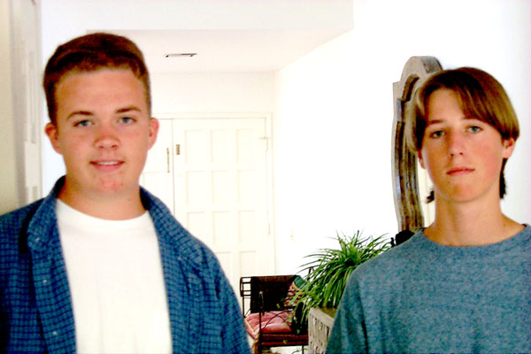
Katie, getting a Pear Smoothie after a hike. It had to be pear, because of our tradition of eating pears after a hike. We had to supply the pears.
Image Name: P0000283s.jpg
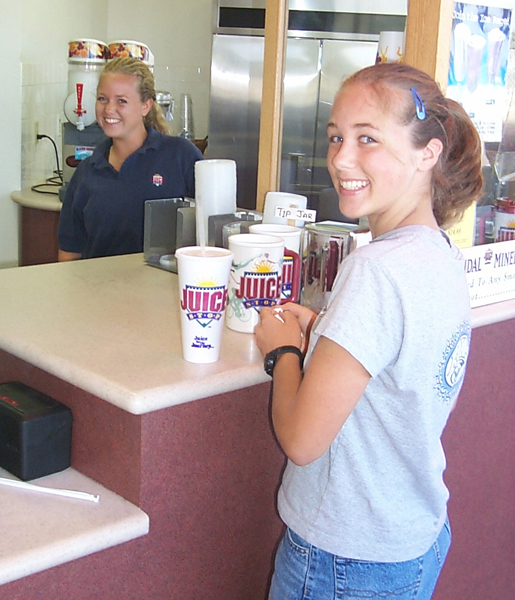
December 1998: Family friend Rick Mack, recently retired airline pilot, gave Katie and David a ride in his Piper Cub.
Image Name: P0000640t.jpg
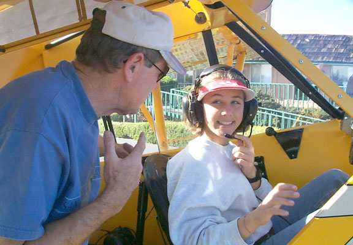
Charlie's abortive attempt at growing a moustache, January 1999.
Image Name: P0000665t.jpg
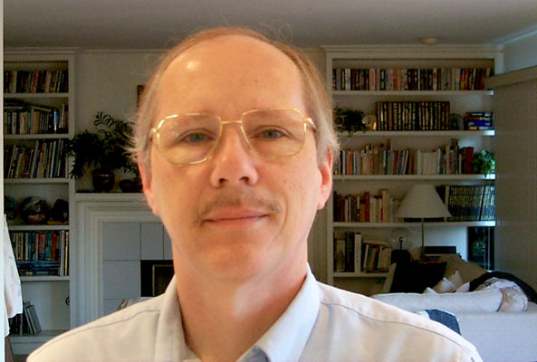
Our celebration of Jeff's 47th birthday in absentia.
Image Name: jeff47.jpg
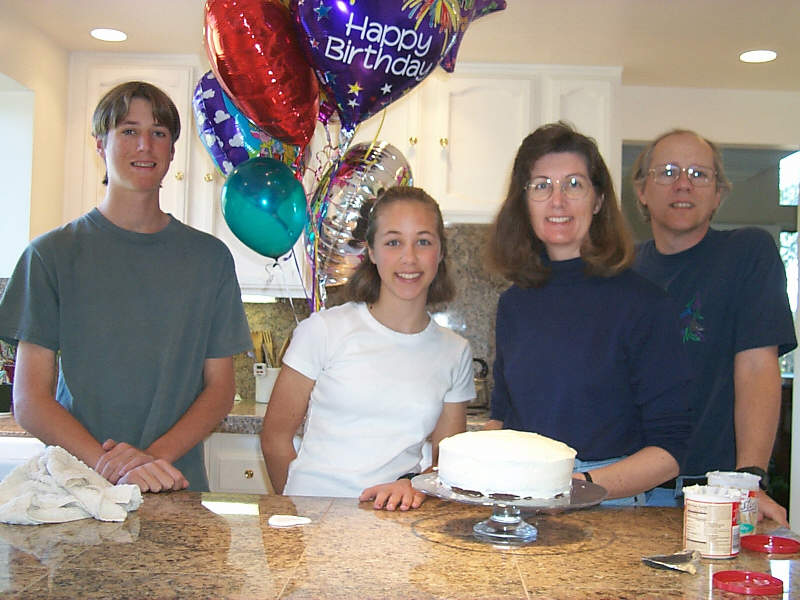
In late January 1999, we went up to Mount Palomar to play in the snow. The Easter Island figure was made by Charlie and David. David is posing with the figure.
Image Name: P0000725t.jpg
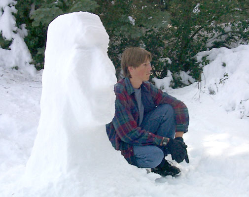
Late January 1999, Charlie posing with Easter Island figure.
Image Name: P0000728t.jpg
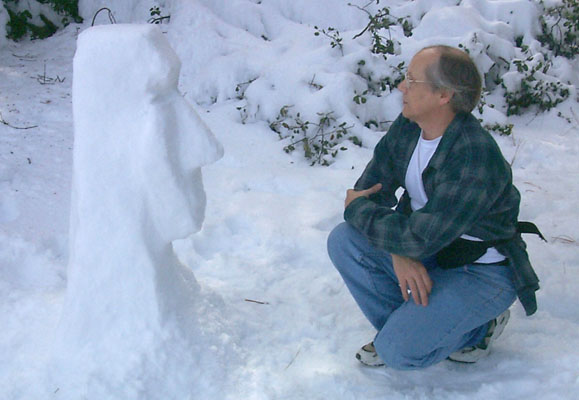
Katie's 13th birthday party, Feb 11 1999. Left to right: Shelly Allen, Katie, Lorelei Anderson, Amanda Van Weiren, Keirsen Incorvia
Image Name: p000741s.jpg
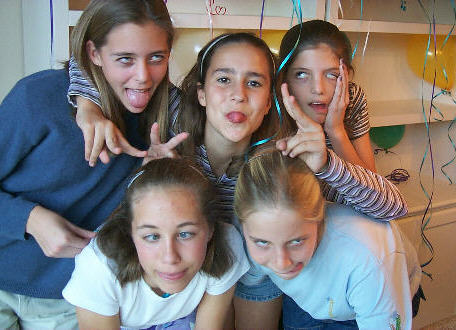
Katie with parakeet "Charger". Feb 1999
Image Name: p000756s.jpg
Typical Scene - Katie on the phone! Feb 1999
Image Name: p000758s.jpg
March 1999 - we got toilet papered… (revenge for Katie's participation in papering a neighbor kid)
Image Name: P0000771.jpg
April 1999 - Charlie and Katie hiked up Palm Canyon near Borrego Springs.
Image Name: P0000824t.jpg
April 1999 - Palm Canyon, Katie the photographer.
Image Name: P0000828t.jpg